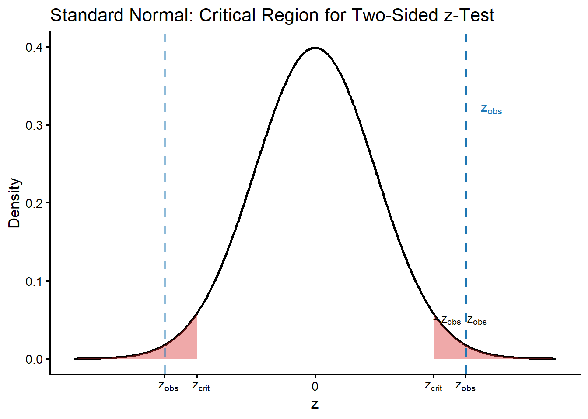
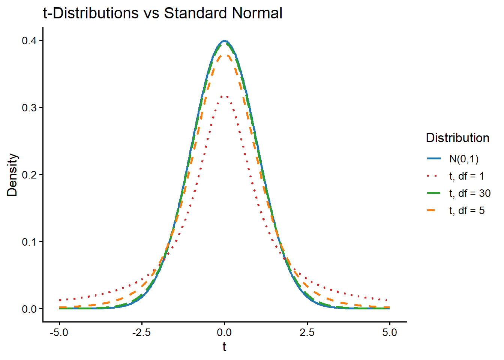
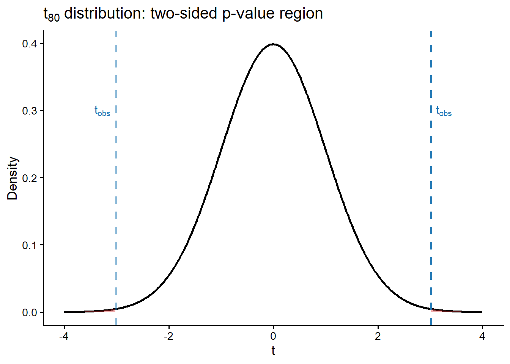
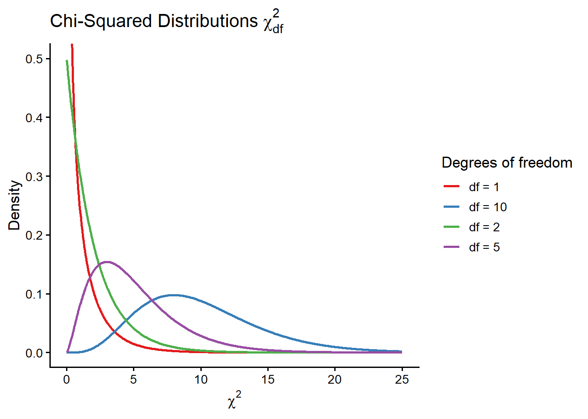
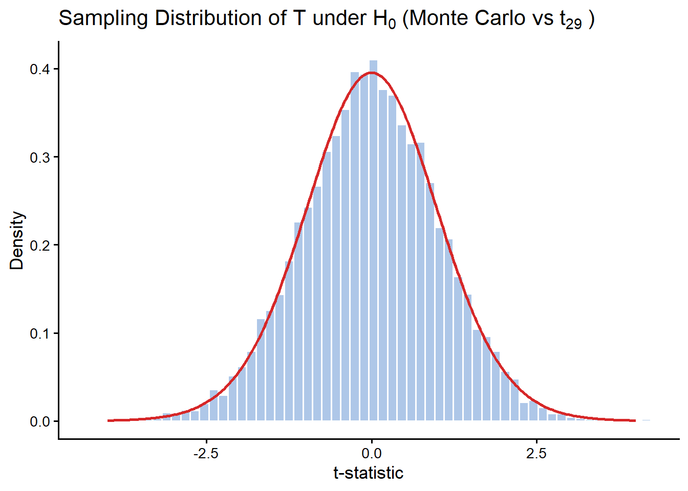

Lecture: One-Sample t-Test
From z-Tests to Student’s t
1 Setup and Motivation
Suppose we have an i.i.d. sample: \[Y_1, Y_2, \ldots, Y_n \sim \mathcal{N}(\mu, \sigma^2).\]
We want to estimate (and test hypotheses about) \(\mu\) and \(\sigma^2\).
1.1 Maximum Likelihood Estimates (MLE)
The MLEs are: \[\hat{\mu} = \bar{y} = \frac{1}{n}\sum_{i=1}^{n} y_i, \qquad \hat{\sigma}^2 = \frac{1}{n}\sum_{i=1}^{n}(y_i - \bar{y})^2 \quad \text{(biased)}.\]
In practice we prefer the unbiased sample variance (requires \(n \geq 2\)): \[s^2 = \frac{1}{n-1}\sum_{i=1}^{n}(y_i - \bar{y})^2.\]
Note (n = 1 edge case): If \(n = 1\), then \(\hat{\mu} = \bar{y} = y_1\) and \(\hat{\sigma}^2 = (y_1 - \bar{y})^2 = 0\), which is degenerate. Always ensure \(n \geq 2\).
2 The z-Test (Known Variance)
Hypotheses: \[H_0: \mu = 0 \quad \text{vs} \quad H_1: \mu \neq 0.\]
Test statistic: The sample mean satisfies \[\mathbb{E}[\bar{Y}] = \mu, \qquad \operatorname{Var}(\bar{Y}) = \frac{\sigma^2}{n},\] so after standardising: \[Z = \frac{\bar{Y} - \mu_0}{\sigma / \sqrt{n}} \sim \mathcal{N}(0,1) \quad \text{when } \sigma = \sigma_0 \text{ is known}.\]
The p-value for the two-sided test is \(P(|Z| \geq z_\text{obs})\).
Practical limitation: z-tests are rarely useful because \(\sigma^2\) is almost never known in practice.
3 The t-Test (Unknown Variance)
3.1 Plug-in estimator
When \(\sigma^2\) is unknown, we substitute \(s^2\) for \(\sigma^2\): \[T = \frac{\bar{Y} - 0}{\sqrt{s^2/n}} = \frac{\bar{Y}}{s/\sqrt{n}}.\]
This statistic is no longer \(\mathcal{N}(0,1)\)-distributed.
3.2 William Gosset (“Student”) and the t-distribution
Gosset showed that if \(\bar{Y} \sim \mathcal{N}(\mu, \sigma^2/n)\) and \(s^2 = \frac{1}{n-1}\sum_{i=1}^n (y_i - \bar{y})^2\), then:
\[\boxed{\frac{\bar{Y} - \mu}{s/\sqrt{n}} \sim t_{n-1}}\]
where \(t_{n-1}\) denotes the Student’s t-distribution with \(n-1\) degrees of freedom.
As \(n \to \infty\) (degrees of freedom \(\to \infty\)), \(t_\nu \to \mathcal{N}(0,1)\).

3.3 Computing p-values in R
In R, the t-distribution functions follow the standard d/p/q/r naming convention:
| Prefix | Function | Purpose |
|---|---|---|
d |
dt() |
Density |
p |
pt() |
CDF / Probability |
q |
qt() |
Quantile |
r |
rt() |
Random sample |
For a two-sided test the p-value is:
\[p\text{-value} = P(|T| \geq t_\text{obs}) = 2 \times P(T \geq |t_\text{obs}|) = 2 \times (1 - \texttt{pt}(t_\text{obs},\, n-1))\]
3.4 Example
Read the gpa_study_hours data set from https://www.openintro.org/data/index.php?data=gpa_study_hours. This dataset has 193 rows and 2 columns. The columns represent the variables gpa and study_hours for a sample of 193 undergraduate students who took an introductory statistics course in 2012 at a private US university.
We are interested in testing hypothesis about the mean study_hours, i.e. if students in this particular class studied more than a specified number of hours, e.g., we can ask if they have studied for more than 15 hours?
'data.frame': 193 obs. of 2 variables:
$ gpa : num 4 3.8 3.93 3.4 3.2 3.52 3.68 3.4 3.7 3.75 ...
$ study_hours: num 10 25 45 10 4 10 24 40 10 10 ...sample size: 193 sample mean: 17.47668 standard error: 0.8212363 t: 3.015799 p_upper <- 1 - pt(t_stat, df = n - 1) # one-sided (H1: mu > mu_0)
p_twosided <- 2 * p_upper # two-sided (H1: mu ≠ mu_0)
cat(sprintf("One-sided p-value : %.4f\n", p_upper))One-sided p-value : 0.0015cat(sprintf("Two-sided p-value : %.4f\n", p_twosided))Two-sided p-value : 0.0029
4 Distribution of \(s^2\): The Chi-Squared Connection
To derive the t-distribution formally, we need the sampling distribution of \(s^2\).
4.1 Chi-squared distribution
If \(Y \sim \mathcal{N}(0,1)\), then \(Y^2 \sim \chi^2_1\).
More generally, if \(Y_1, \ldots, Y_n \overset{\text{iid}}{\sim} \mathcal{N}(0,1)\), then: \[\sum_{i=1}^n Y_i^2 \sim \chi^2_n.\]

4.2 Decomposition of the total sum of squares
For \(Y_i \sim \mathcal{N}(\mu, \sigma^2)\), we know \(\sum_{i=1}^n \left(\frac{Y_i - \mu}{\sigma}\right)^2 \sim \chi^2_n\).
By adding and subtracting \(\bar{y}\): \[\sum_{i=1}^n \left(\frac{Y_i - \mu}{\sigma}\right)^2 = \sum_{i=1}^n \frac{(Y_i - \bar{Y})^2}{\sigma^2} + \left(\frac{\bar{Y} - \mu}{\sigma/\sqrt{n}}\right)^2 = \frac{(n-1)s^2}{\sigma^2} + \underbrace{\left(\frac{\bar{Y} - \mu}{\sigma/\sqrt{n}}\right)^2}_{\sim\, \chi^2_1}.\]
The cross-term \(\sum_i (y_i - \bar{y})(\bar{y} - \mu) = 0\) by construction, so by independence of the two components:
\[\boxed{\frac{(n-1)s^2}{\sigma^2} \sim \chi^2_{n-1}}\]
Equivalently: \[s^2 \sim \frac{\sigma^2}{n-1} \cdot \chi^2_{n-1}, \qquad \sigma^2 \sim \frac{(n-1)s^2}{\chi^2_{n-1}}.\]
5 Summary: The One-Sample t-Test
Setup: \(Y_1, \ldots, Y_n \overset{\text{iid}}{\sim} \mathcal{N}(\mu, \sigma^2)\), both \(\mu\) and \(\sigma^2\) unknown.
Hypotheses: \[H_0: \mu = \mu_0 \quad \text{vs} \quad H_1: \mu \neq \mu_0 \quad (\text{two-sided}).\]
Combining results: Since \(\bar{Y} \sim \mathcal{N}(\mu, \sigma^2/n)\) and \(\frac{(n-1)s^2}{\sigma^2} \sim \chi^2_{n-1}\) are independent, their ratio yields:
\[\bar{Y} \sim t_{n-1}\!\left(\mu,\, \frac{s^2}{n}\right), \qquad T = \frac{\bar{Y} - \mu_0}{s/\sqrt{n}} \sim t_{n-1} \quad \text{under } H_0.\]
p-values:
\[p\text{-value} = \begin{cases} P(T > t_\text{obs}) & \text{if } H_1: \mu > \mu_0, \\ P(|T| > t_\text{obs}) & \text{if } H_1: \mu \neq \mu_0. \end{cases}\]
95% Confidence interval: \[\bar{Y} \pm t_{n-1,\, 0.975} \cdot \frac{s}{\sqrt{n}} \approx \bar{Y} \pm 1.96 \cdot \frac{s}{\sqrt{n}} \quad \text{(large } n).\]
In R:
# Simulate some data and run a one-sample t-test
set.seed(42)
y <- rnorm(30, mean = 0.3, sd = 1)
result <- t.test(y, mu = 0)
print(result)
One Sample t-test
data: y
t = 1.6086, df = 29, p-value = 0.1185
alternative hypothesis: true mean is not equal to 0
95 percent confidence interval:
-0.1000484 0.8372220
sample estimates:
mean of x
0.3685868 5.1 Caveat: Gaussianity assumption
The exact result \(\frac{\bar{Y} - \mu}{s/\sqrt{n}} \sim t_{n-1}\) holds only when \(Y_1, \ldots, Y_n\) are Gaussian. For non-Gaussian data, alternatives include:
- Nonparametric tests (e.g., Wilcoxon signed-rank test).
- Monte Carlo / permutation approaches to obtain the sampling distribution of the test statistic empirically.
6 Problem: Gaussianity Assumption and Alternatives
B <- 10000
n <- 30
t_stats <- replicate(B, {
y_sim <- rnorm(n, mean = 0, sd = 1)
t.test(y_sim, mu = 0)$statistic
})
x_seq <- seq(-4, 4, length.out = 300)
theory <- data.frame(x = x_seq, y = dt(x_seq, df = n - 1))
ggplot(data.frame(t = t_stats), aes(x = t)) +
geom_histogram(aes(y = after_stat(density)),
bins = 60, fill = "#aec7e8", colour = "white") +
geom_line(data = theory, aes(x, y), colour = "#d62728", linewidth = 1) +
labs(x = "t-statistic", y = "Density",
title = expression("Sampling Distribution of T under H"[0] ~ "(Monte Carlo vs" ~ t[29] ~ ")"))